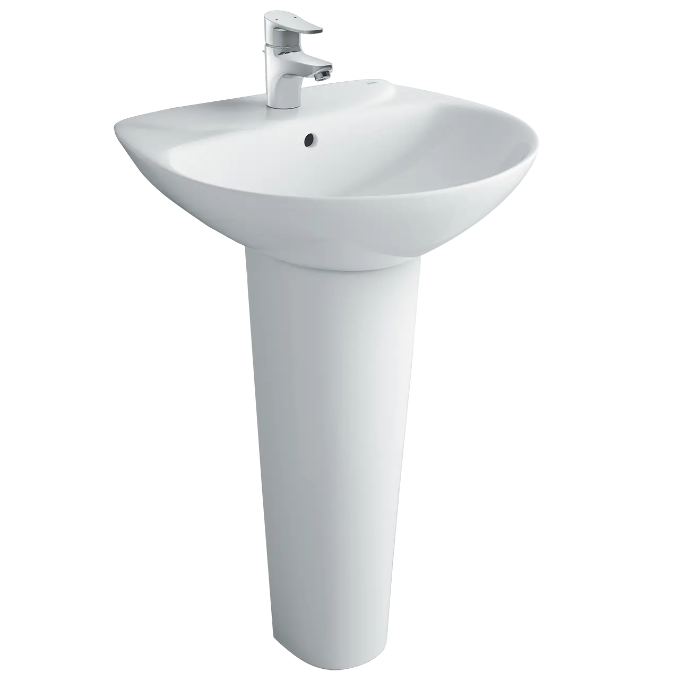
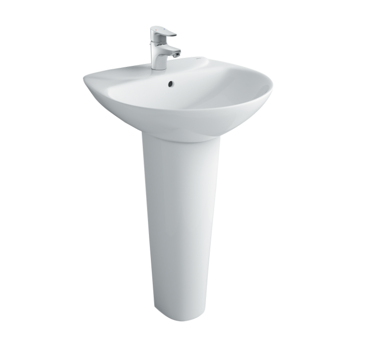
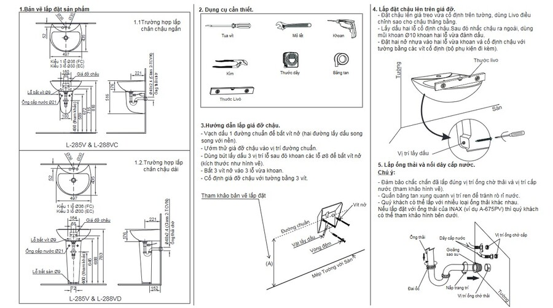

INAX L-288VD là mẫu chân chậu lavabo đứng đặt sàn, được thiết kế như một phụ kiện hoàn hảo để kết hợp với chậu rửa mặt INAX L-288V (EC/FC), tạo nên vẻ đẹp đồng bộ và sang trọng cho không gian phòng tắm. Sản phẩm nổi bật với thiết kế chân dài, hiện đại, giúp che đi bộ xả lavabo một cách tinh tế.Ưu điểm của chân chậu L-288VDChất liệu và công nghệ bền bỉ vượt trộiChân chậu L-288VD được sản xuất từ sứ vệ sinh cao cấp với lớp men bóng đặc trưng của INAX. Chất liệu này không chỉ đảm bảo độ bền bỉ vượt trội mà còn tích hợp các đặc tính ưu việt giúp ngăn ngừa vi khuẩn phát triển và dễ dàng lau chùi mọi vết bẩn.Nhờ vậy, sản phẩm duy trì được vẻ trắng sáng, sạch sẽ và thẩm mỹ lâu dài. Đây là sản phẩm thuộc phân khúc phụ kiện thiết bị vệ sinh cao cấp từ thương hiệu INAX, được sản xuất tại Việt Nam theo công nghệ tiêu chuẩn kỹ thuật khắt khe của Nhật Bản, mang lại sự an tâm tuyệt đối về chất lượng.Thiết kế đồng bộ, tinh tế và hiện đạiChân chậu L-288VD nổi bật với kiểu dáng chân chậu dài nhưng vẫn giữ được sự gọn nhẹ, hiện đại và tinh tế. Thiết kế đặt sàn này không chỉ đảm bảo sự chắc chắn khi lắp đặt mà còn tạo nên sự đồng bộ hoàn hảo cho phòng tắm bằng cách che đi phần ống xả và các chi tiết kỹ thuật phía dưới chậu rửa mặt. Lớp màu trắng thanh lịch của sứ mang lại sự sáng sủa, tạo cảm giác không gian rộng rãi hơn, đồng thời thể hiện phong cách sang trọng và đẳng cấp cho khu vực lắp đặt.Với kích thước tiêu chuẩn 645 x 230 x 300 (mm), sản phẩm cũng dễ dàng phù hợp với nhiều không gian.Lắp đặt dễ dàngChân chậu L-288VD được đóng gói kèm theo bộ ốc vít gắn tường cần thiết, giúp quá trình lắp đặt trở nên đơn giản và vững chắc. Sản phẩm được thiết kế để kết hợp hoàn hảo và đồng bộ với các dòng chậu rửa treo tường phổ biến của INAX như L-288V (EC/FC) và L-285V (EC/FC), tạo ra một tổng thể hài hòa và chuyên nghiệp.Bảo hành 10 nămĐặc biệt, khách hàng hoàn toàn yên tâm với chính sách bảo hành lên đến 10 năm cho phần sứ, một cam kết mạnh mẽ về độ bền và chất lượng sản phẩm từ thương hiệu INAX.Video giới thiệu chậu rửa INAXBản vẽ lắp đặt chân chậu L-288VDXem hướng dẫn lắp đặt tại đây.Thông số kỹ thuậtChất liệuSứ cao cấpDạng sản phẩmChân chậu lavabo đứng đặt sànKích thước645 x 230 x 300 (mm)Thiết kếĐứng mang đến vẻ đẹp đồng bộ cho không gian phòng tắmThương hiệuINAXMàu sắcTrắngKhác- Gợi ý sản phẩm đi kèm: Chậu rửa treo tường L-288V (EC/FC), L-285V (EC/FC) - Hotline tư vấn và bảo hành: 18006633
Chân chậu L-288VD L-288VD(chânchậu)
Chậu rửa thương hiệu INAX.
Đã cập nhật danh sách yêu thích.
DANH MỤC: Chậu rửa
MÃ SẢN PHẨM: L-288VD(chânchậu)
DEPTH: 435mm
HEIGHT: 783mm
WIDTH: 497mm
INAX L-288VD là mẫu chân chậu lavabo đứng đặt sàn, được thiết kế như một phụ kiện hoàn hảo để kết hợp với chậu rửa mặt INAX L-288V (EC/FC), tạo nên vẻ đẹp đồng bộ và sang trọng cho không gian phòng tắm. Sản phẩm nổi bật với thiết kế chân dài, hiện đại, giúp che đi bộ xả lavabo một cách tinh tế.Ưu điểm của chân chậu L-288VDChất liệu và công nghệ bền bỉ vượt trộiChân chậu L-288VD được sản xuất từ sứ vệ sinh cao cấp với lớp men bóng đặc trưng của INAX. Chất liệu này không chỉ đảm bảo độ bền bỉ vượt trội mà còn tích hợp các đặc tính ưu việt giúp ngăn ngừa vi khuẩn phát triển và dễ dàng lau chùi mọi vết bẩn.Nhờ vậy, sản phẩm duy trì được vẻ trắng sáng, sạch sẽ và thẩm mỹ lâu dài. Đây là sản phẩm thuộc phân khúc phụ kiện thiết bị vệ sinh cao cấp từ thương hiệu INAX, được sản xuất tại Việt Nam theo công nghệ tiêu chuẩn kỹ thuật khắt khe của Nhật Bản, mang lại sự an tâm tuyệt đối về chất lượng.Thiết kế đồng bộ, tinh tế và hiện đạiChân chậu L-288VD nổi bật với kiểu dáng chân chậu dài nhưng vẫn giữ được sự gọn nhẹ, hiện đại và tinh tế. Thiết kế đặt sàn này không chỉ đảm bảo sự chắc chắn khi lắp đặt mà còn tạo nên sự đồng bộ hoàn hảo cho phòng tắm bằng cách che đi phần ống xả và các chi tiết kỹ thuật phía dưới chậu rửa mặt. Lớp màu trắng thanh lịch của sứ mang lại sự sáng sủa, tạo cảm giác không gian rộng rãi hơn, đồng thời thể hiện phong cách sang trọng và đẳng cấp cho khu vực lắp đặt.Với kích thước tiêu chuẩn 645 x 230 x 300 (mm), sản phẩm cũng dễ dàng phù hợp với nhiều không gian.Lắp đặt dễ dàngChân chậu L-288VD được đóng gói kèm theo bộ ốc vít gắn tường cần thiết, giúp quá trình lắp đặt trở nên đơn giản và vững chắc. Sản phẩm được thiết kế để kết hợp hoàn hảo và đồng bộ với các dòng chậu rửa treo tường phổ biến của INAX như L-288V (EC/FC) và L-285V (EC/FC), tạo ra một tổng thể hài hòa và chuyên nghiệp.Bảo hành 10 nămĐặc biệt, khách hàng hoàn toàn yên tâm với chính sách bảo hành lên đến 10 năm cho phần sứ, một cam kết mạnh mẽ về độ bền và chất lượng sản phẩm từ thương hiệu INAX.Video giới thiệu chậu rửa INAXBản vẽ lắp đặt chân chậu L-288VDXem hướng dẫn lắp đặt tại đây.Thông số kỹ thuậtChất liệuSứ cao cấpDạng sản phẩmChân chậu lavabo đứng đặt sànKích thước645 x 230 x 300 (mm)Thiết kếĐứng mang đến vẻ đẹp đồng bộ cho không gian phòng tắmThương hiệuINAXMàu sắcTrắngKhác- Gợi ý sản phẩm đi kèm: Chậu rửa treo tường L-288V (EC/FC), L-285V (EC/FC) - Hotline tư vấn và bảo hành: 18006633
DANH MỤC: Chậu rửa
MÃ SẢN PHẨM: L-288VD(chânchậu)
DEPTH: 435mm
HEIGHT: 783mm
WIDTH: 497mm